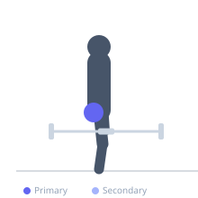
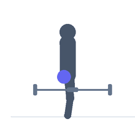

Exercise guide / Reverse Wrist Curl
Reverse Wrist Curl
The reverse wrist curl is an isolation exercise for the wrist extensor muscles performed with the forearms resting on a surface and the palms facing downward. The wrists are extended upward against resistance, targeting the extensor carpi radialis and extensor carpi ulnaris. This muscle group is often undertrained compared to the wrist flexors, and strengthening it is important for balance, elbow joint health, and reducing the risk of lateral epicondylitis.
Primary muscles
extensor carpi radialis
Secondary muscles
Equipment
Dumbbell (Fixed)
Optional
Flat Bench
EZ-Curl Bar


Starting position
- Sit on a bench. Rest forearms on the thighs or bench pad with the wrists hanging off the edge. Palms face downward (pronated). Hold a dumbbell or barbell with an overhand grip.
Setup
- Use lighter weight than for wrist curls — the extensors are smaller muscles. Forearms fully supported, only wrists free to move.
Steps
- Step 1: Forearms resting on a surface, palms facing downward, weight in hands. Allow the wrists to drop into full flexion.
- Step 2: Exhale and extend the wrists, lifting the weight upward as far as possible.
- Step 3: Hold the peak extension briefly.
- Step 4: Inhale and slowly lower the wrists back to full flexion (drop).
Coaching cues
- Palms down — only the wrists move upward
- Light weight, full range — go through the complete drop to extension arc
Breathing
- Exhale on extension; inhale on lowering.
Range of motion
- Full wrist flexion drop at the bottom; maximum extension at the top.
Tempo
- 2-1-2-0
Common mistakes
- Using the same weight as for wrist curls — the extensors require significantly less load
- Lifting the forearms off the support during the extension
Safety
- Keep loads conservative — the wrist extensors are injury-prone under heavy loads
- If lateral elbow pain exists (tennis elbow), consult a clinician before loading this exercise
Training
- hypertrophy: 12–20 reps
- endurance: 15–30 reps
- hypertrophy: 2–3 sets
- endurance: 2–3 sets
- Rest: {'hypertrophy': 45, 'endurance': 30}